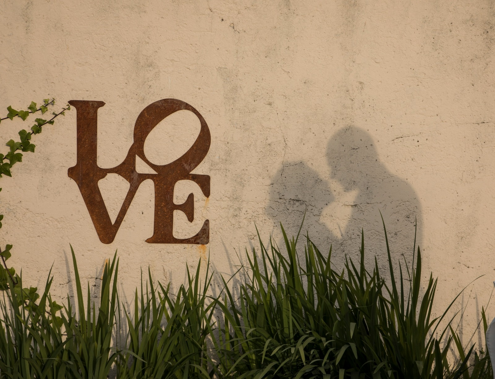

Vuestros momentos,
contados con calma.
Fotografía y vídeo de bodas, retratos de estudio y recuerdos en cinta recuperados. Un trato cercano y un trabajo cuidado en Gijón y toda Asturias.
Ver serviciosGijón · Asturias
Fotografía y vídeo
Imágenes para volver a ellas dentro de veinte años.
Un mismo equipo para fotografiar, grabar y conservar lo que más importa: vuestra boda, vuestra familia y los recuerdos que guardáis en un cajón.
Servicios
Lo que hacemos



Nuria Fernández
La pasión de una vida entre cámaras.
Nuria heredó de su padre el amor por la fotografía y ha sido premiada en fotografía social. Hace reportajes en digital y también en analógico, con textura y un toque de nostalgia. Os acompaña con cercanía para que os sintáis cómodos desde el primer momento.
HablemosLo que dicen las parejas
[Espacio para una opinión real de una pareja]
[Espacio para una opinión real de una pareja]
[Espacio para una opinión de Google]